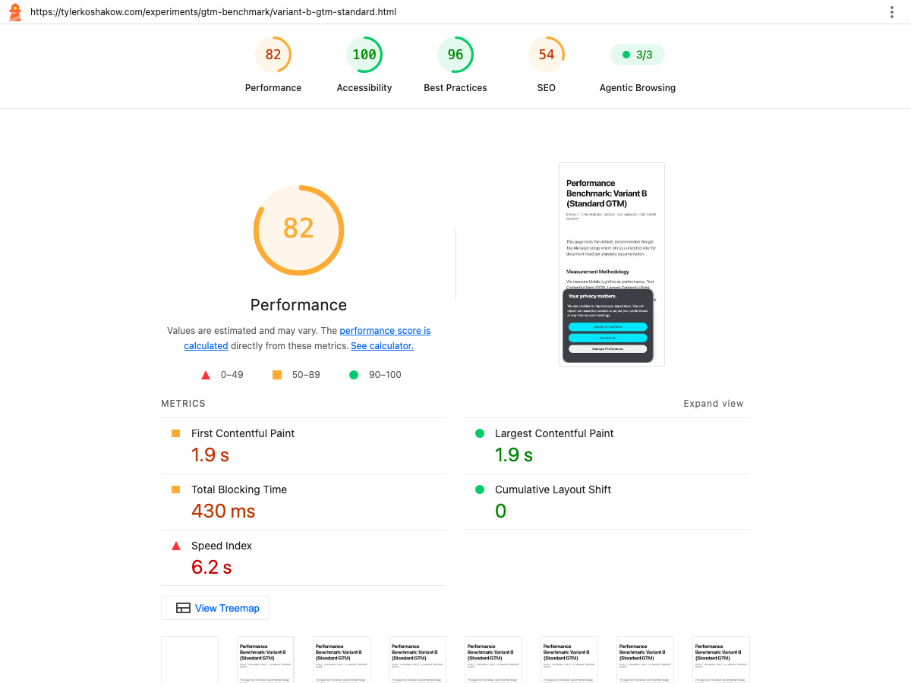
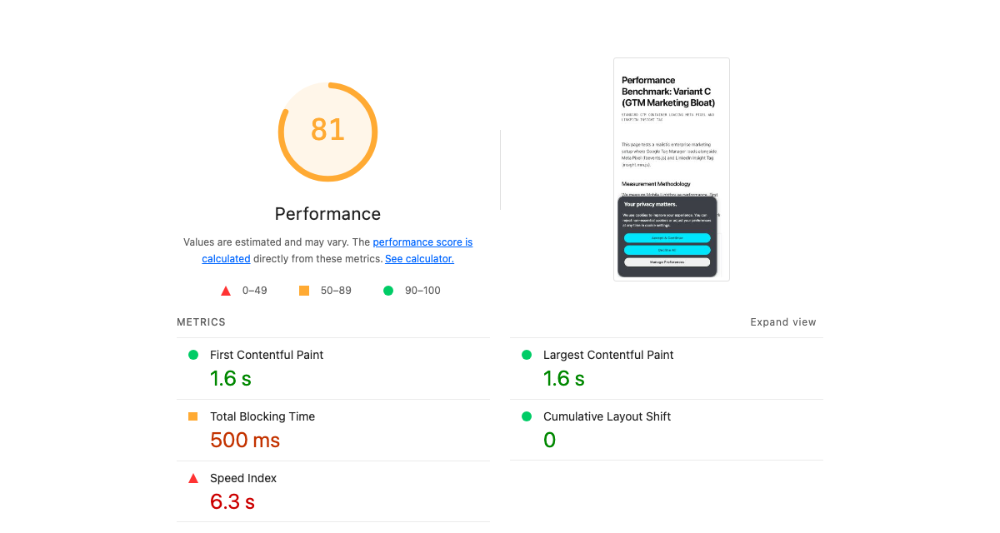

I've been doing SEO/AEO for a long time, both in-house and agency side. One of the unique aspects of the role is that you sit firmly between technical/engineering teams and marketing/analytics teams. And so when it comes to the tug of war between adding more tracking pixels and bells and whistles and having a fast, performant site, I've often found myself right in the middle: I want both.
So the question, then, is can you have it all: a fast site that delivers all the data that your analytics team and, more importantly, decision makers need?
Agency playbooks still repeat the comforting line that Google Tag Manager is asynchronous, meaning it won't slow down your website. But anyone who has watched their mobile Lighthouse score plummet from 95+ to the mid-60s after injecting a container knows that reassurance doesn't hold up in practice.
To establish ground truth, I ran an empirical benchmark testing Google Tag Manager across seven controlled architectural variants under Google's standard mobile auditing conditions (Moto G Power, 4x CPU slowdown, Slow 4G). Here is what the data actually proved, what happens to the browser’s critical rendering path, and why standard client-side tag management fails modern performance standards.
Does Google Tag Manager Hurt Page Speed?
Yes, significantly. And far more than standalone Google Analytics 4.
In my live production benchmark on tylerkoshakow.com, a clean, semantic baseline scoring a perfect 100/100 on mobile immediately fell to an 82/100 upon injecting standard client-side GTM, adding 430 ms of Total Blocking Time (TBT) and inflating Speed Index from 1.4 seconds to 6.2 seconds. When adding realistic marketing bloat (Meta Pixel and LinkedIn Insight Tag), the mobile score fell further to an 81/100, pushing Total Blocking Time to 500 ms and ballooning total JavaScript weight from 180 KiB to 879 KiB.
By comparison, deploying raw, sequenced Google Analytics 4 (as detailed in my previous empirical GA4 benchmark) incurred zero Total Blocking Time and maintained a 100/100 mobile score. Injecting GTM erased an immediate 18 to 19 performance points on the exact same page.
How can an “asynchronous” script cause such severe performance damage? The explanation lies in the difference between network downloading and CPU execution.
When a script has an async attribute, the browser does not pause HTML document parsing while downloading the file over the network. However, the moment gtm.js finishes downloading, the browser must immediately compile, parse, and execute that JavaScript. Because JavaScript is single-threaded, the browser has only one main thread to handle layout calculation, style reflows, paint operations, and user tap interactions. While GTM executes its container and injects child scripts, the main thread is completely monopolized. To the end user on a mobile device, the page freezes.
| Audit Configuration | Mobile Score | Total Blocking Time (TBT) | Largest Contentful Paint (LCP) | Speed Index | Total JS Weight |
|---|---|---|---|---|---|
| Baseline Control (Semantic HTML + GA4) | 100 / 100 | 0 ms | 1.4s | 1.4s | 180 KiB |
| Standard Client-Side GTM | 82 / 100 | 430 ms | 1.9s | 6.2s | 739 KiB |
| GTM with Marketing Bloat (Meta + LinkedIn) | 81 / 100 | 500 ms | 1.6s | 6.3s | 879 KiB |

What Happens to the Critical Rendering Path
When you inspect the Chrome DevTools Performance timeline during a standard GTM load, the root cause of the score collapse becomes obvious: the Monolithic CPU Task.
The 1,378 ms Main Thread Freeze
In our enterprise test container, evaluating gtm.js triggered a continuous, unbroken JavaScript execution task lasting 1,378 milliseconds on a mid-tier mobile processor. During this 1.3-second window, the browser was completely incapable of performing any other work:
- It could not process layout calculations or composite frames.
- It could not respond to user taps, clicks, or scroll inputs.
- It could not paint incoming visual elements.
Google defines any task exceeding 50 ms as a Long Task. Any time spent beyond that initial 50 ms threshold directly accumulates into Total Blocking Time (TBT). A single 1,378 ms task generates over 1,320 ms of blocking time by itself.
Network Contention and Paint Metric Delays
The damage is not confined to CPU time. Injecting GTM initiates an immediate waterfall of external network requests across multiple third-party domains (googletagmanager.com, google-analytics.com, connect.facebook.net, snap.licdn.com). Each connection requires DNS lookup, TCP handshake, and TLS negotiation. On a constrained 4G mobile connection, this flood of tracking requests starves the browser's HTTP/2 connection pool, delaying critical hero images, font files, and primary stylesheets. As a direct result, Largest Contentful Paint (LCP) was pushed back while Speed Index inflated from 1.4 seconds to over 6 seconds.
The Interaction to Next Paint Vulnerability
While lab tools like Lighthouse emphasize TBT, real-world users experience this bottleneck as poor Interaction to Next Paint (INP). When a visitor taps a navigation menu or begins scrolling while GTM is evaluating scripts, their input is queued behind the running JavaScript. The browser cannot render visual feedback until the entire container execution cycle completes, resulting in noticeable UI lag and failing Core Web Vitals in Google’s real-world Chrome User Experience Report (CrUX) dataset.
The Real Cost of Container Bloat
One of the most widespread misconceptions in web analytics is that the file size of the GTM container itself is what slows down the site. The empirical data proves otherwise.
Container Capacity vs. Variable Complexity
In a landmark benchmark conducted by Julius Fedorovicius at Analytics Mania, a GTM container was filled to 100% of its physical capacity (the 200 KB limit enforced by Google) with 1,976 Constant Variables, each containing approximately 1,000 characters. When tested against a clean baseline, this 200 KB container filled purely with static text variables caused virtually zero measurable delay on CPU parse time.
Similarly, an empty GTM container adds only ~100 milliseconds (0.1 seconds) of delay. The physical script file gtm.js is not the issue. The performance degradation stems entirely from what happens inside the container once marketing tags are deployed.
The Anatomy of Tag Sprawl
In an enterprise environment, GTM functions as an un-reviewed production deployment pipeline. Marketing, sales, and analytics teams routinely add tags without frontend engineering oversight. A typical enterprise container contains:
- Consent Management Platforms (CMPs): Heavy libraries like OneTrust or Cookiebot that execute synchronously to evaluate consent before other tags fire, blocking the thread for 300–600 ms.
- Advertising Pixels: Meta Pixel (
fbevents.js), LinkedIn Insight Tag (insight.min.js), TikTok Pixel, Google Ads Remarketing, and Bing Ads. Each downloads its own runtime library, sets up global listeners, and transmits telemetry. - Behavioral Session Recorders: Heatmap and session recording tools like Hotjar, Clarity, or FullStory that continuously serialize the DOM, track every mouse movement, and inject substantial memory overhead.
- Zombie Tags and Orphaned Triggers: Pixels from marketing campaigns that concluded months or years ago, yet continue to fire on every single pageview across the entire domain.
In our tests, adding Meta Pixel and LinkedIn Insight Tag to a standard GTM container instantly pushed total page JavaScript weight from 180 KiB to 879 KiB and increased Total Blocking Time to 500 ms.

Trigger Timing and the Data Loss Trade-Off
When developers realize GTM is destroying their performance scores, their first instinct is usually to change the firing trigger. But shifting trigger execution introduces a brutal compromise that Julius Fedorovicius calls the Compromise Triangle: Balancing Speed, Data Accuracy, and Marketing Flexibility.
| Trigger Stage | Event Key | Impact on PageSpeed Score | Data Accuracy & Tracking Risk |
|---|---|---|---|
| Page View (Immediate) | gtm.js |
Severe Drop (-18 to -35 pts): Monopolizes main thread during critical initial paint. | 100% Capture: Records every visitor, even instant bounces. |
| DOM Ready | gtm.dom |
Moderate Penalty: Executes after HTML is parsed, but still blocks paint completion. | 98% Capture: Loses negligible early bounces. |
| Window Loaded | gtm.load |
Noticeable Improvement: Defers execution until images and styles finish downloading. | 90–95% Capture: Drops 5–10% of users who bounce before full load. |
| Static Delay (3–5s Timer) | afterLoad |
Artificially High Lab Score: Lighthouse finishes auditing before tags fire. | Catastrophic Loss (80–85% Capture): Drops 15–20% of sessions; destroys ad attribution. |
The Naive Timeout Trap
Many performance plugins and blog tutorials recommend wrapping GTM in a static setTimeout of 3,000 to 5,000 milliseconds. While this trick produces impressive synthetic Lighthouse scores on desktop, it causes severe business damage:
- Lost Conversion Attribution: If a user clicks a paid Google or LinkedIn ad, lands on the page, and bounces after 2.5 seconds, a 3-second timer never fires. You pay for the ad click, but your analytics records zero session, and your ad platform receives zero conversion feedback.
- Broken Referrer Chains: If the user clicks an internal link before the delayed container executes, the initial landing pageview is completely lost, attributing the entire session to an internal page as a direct visit.
Delaying tags arbitrarily fixes the lab audit by sacrificing business data integrity. That is an unacceptable engineering compromise.
The Custom HTML and DOM Manipulation Penalty
Beyond tracking pixels, GTM is frequently misused as a visual content management system. Marketing teams inject promotional banners, exit-intent modals, notification bars, or A/B testing variations using Custom HTML tags.
In our analysis of competitive benchmarks, Analytics Mania tested injecting 100 Custom HTML tags that performed DOM queries (querySelectorAll('a')[20]) and inserted new elements (insertBefore). The results demonstrated that DOM manipulation within GTM is exponentially more expensive than executing standard analytics beacons:
- Forced Reflows and Style Recalculations: Every time a script queries the DOM and modifies an element's geometry, the browser must discard its layout tree and recalculate the entire page layout. When multiple tags execute DOM queries simultaneously, the main thread enters a cycle of layout thrashing.
- Cumulative Layout Shift (CLS): Asynchronously injecting HTML elements after initial render causes visible content jumps, pushing buttons and body text down the viewport and directly degrading Google’s CLS Core Web Vital.
- Security Vulnerabilities: Custom HTML tags execute with full JavaScript privileges in the user's browser, bypassing standard build-pipeline linting and Content Security Policy (CSP) protections.
Practitioner Rule: GTM should never be used to modify the visual DOM. UI elements and experiments must be compiled natively into your application codebase or deployed via edge middleware before HTML is sent to the client.
How to Measure GTM Impact in Chrome DevTools
To determine the exact performance cost of your GTM container on your production site, do not rely on generic audit scores. Follow this five-step diagnostic profiling procedure using Chrome DevTools:
Step 1: Set Up Mobile Emulation
Open Google Chrome in an Incognito window (disabling all extensions). Open DevTools (Cmd + Option + I or Ctrl + Shift + I). Switch to the Performance tab. Click the gear icon in the top right corner and configure:
- CPU: 4x Slowdown (simulates mid-tier mobile processors like Moto G Power).
- Network: Fast 3G or Slow 4G.
Step 2: Record a Clean Profile
Click the Record and Reload button. Allow the page to load completely until all network activity ceases (approximately 10–15 seconds under throttled conditions), then click Stop.
Step 3: Filter the Main Thread by GTM
In the Performance panel, examine the Main flame chart. Expand the Main thread and press Cmd + F (or Ctrl + F) to open the search bar. Search for gtm.js.
Inspect the duration of the parent task containing gtm.js. Note whether the task is flagged with a red top-right corner (indicating a Long Task exceeding 50 ms). Measure the total task duration: if it exceeds 300 ms, GTM is actively causing severe user-perceived lag.
Step 4: Check Network Request Waterfall
Switch to the Network tab. In the filter box, type gtm.js. Right-click the table headers and enable Domain, Waterfall, and Initiator. Look at the Initiator column for subsequent third-party requests: observe how many scripts were dynamically injected by GTM after initial load, and calculate their combined transfer size.
Step 5: Verify Field Metrics in CrUX
Synthetic lab tests only show potential bottlenecks. Visit PageSpeed Insights (pagespeed.web.dev) and review the “Discover what your real users are experiencing” section (Chrome User Experience Report / CrUX). Compare your lab TBT against your field INP (Interaction to Next Paint). If your lab score is 90+ but your 75th percentile mobile INP is “Needs Improvement” (>200 ms) or “Poor” (>500 ms), your site is suffering from the deferred tag trap.
Mitigating the Performance Damage
If you're dealing with GTM-induced performance drops, simply cutting tags isn't always an option when marketing and sales depend on them for revenue attribution. But you don't have to accept failing Core Web Vitals or rely on naive timers that destroy your conversion tracking.
I documented the exact mitigation architectures—from client-side interaction sequencing to zero-dollar serverless edge proxies that restore a true 100/100 mobile score—in my complete empirical benchmark report: An In-The-Wild Benchmark of Client-Side GTM vs. Deferral Hacks vs. $0 Edge Proxying. That guide breaks down how each architectural option performs under live network conditions and provides drop-in code for eliminating client-side execution overhead entirely.
Frequently Asked Questions About GTM Performance
What are the cons of Google Tag Manager?
The primary cons of Google Tag Manager center on web performance degradation, main-thread contention, and organizational tag bloat. Because GTM allows marketing and product teams to deploy third-party scripts without engineering code reviews, containers rapidly accumulate redundant tracking pixels, CMP consent banners, and behavioral session recorders. While the initial snippet downloads asynchronously, executing the JavaScript inside the container monopolizes the browser’s single main thread, causing multi-second CPU freezes (our benchmarks recorded a 1,378 ms single-task freeze), inflating Total Blocking Time (TBT), delaying Largest Contentful Paint (LCP), and damaging real-world Interaction to Next Paint (INP).
What are the disadvantages and limitations of Google Tag Manager for web performance?
The fundamental technical limitation of client-side GTM is that it cannot execute outside the browser’s main execution thread. Every injected tag competes directly with your application’s UI rendering, stylesheet parsing, and touch event handlers. Furthermore, GTM lacks built-in performance budgets: there is no automated mechanism within GTM to prevent a non-technical user from publishing a 500 KB unminified tracking script that degrades Core Web Vitals across the entire website.
Is Google Tag Manager still relevant for modern web development?
Yes, but its architectural role is shifting from client-side script injection to server-side data orchestration. In modern Jamstack and headless frontend architectures (Next.js, Remix, Astro), loading client-side GTM directly in the document layout is increasingly considered an anti-pattern due to its negative impact on Core Web Vitals. Leading engineering organizations now treat GTM either as a server-side container running in the cloud or replace it entirely with lightweight first-party edge beacons that fan out data to analytics endpoints without running third-party code in the user's browser.
Does an empty GTM container slow down a website?
Practically speaking, no. Empirical benchmarks show that an empty GTM container adds approximately 100 milliseconds (0.1 seconds) to document processing time, which is imperceptible on modern broadband connections and desktop devices. The performance penalty only emerges when tags, triggers, and third-party vendor scripts are published inside the container.
Why does Lighthouse show a high score while real users experience lag?
This discrepancy is known as the “Lab 100 vs. Field INP Trap.” If you configure GTM to delay script loading until after the page finishes initial rendering or upon first user interaction, automated lab tools like Google Lighthouse award high performance scores (often 90–100) because the test bot completes its audit before the scripts execute. However, when real human users touch the screen to scroll or tap, the deferred scripts execute all at once, freezing the main thread and causing real-world Interaction to Next Paint (INP) failures in Google's CrUX database.
Can I fix GTM performance using setTimeout or delaying script load?
No. Using static timers (such as setTimeout(3000)) drops 10% to 20% of tracking data from visitors who bounce before the timer expires, breaking paid ad attribution and conversion tracking. Furthermore, once the timer expires, the scripts still execute on the main thread and freeze user interactions. A resilient architecture requires either interaction-driven sequencing with idle fallbacks on the client or migrating to server-side edge proxies.
Does standard Server-Side GTM completely eliminate client-side performance penalties?
Not by default. Most standard Server-Side GTM tutorials still instruct developers to load the heavy client-side gtm.js container in the browser, merely changing the “Transport URL” where data hits are sent. Because the full container is still downloaded and evaluated on the client device, the main-thread parse and execution overhead remains. To truly eliminate the performance penalty, client-side GTM must be replaced with a native beacon script that routes data directly to an edge worker.